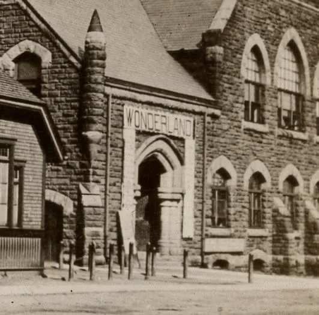
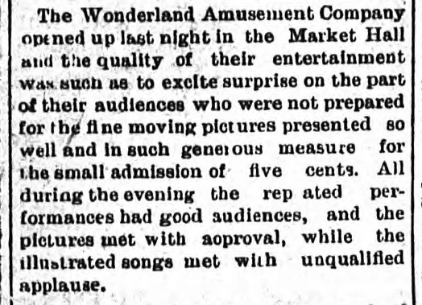
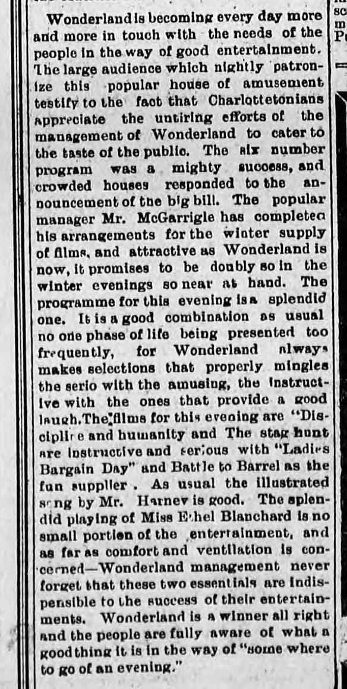

Five Cents at Wonderland
One of the pleasures of scanning these postcards is that I get to see each one through a magnifying glass. I sit down to crop the edges and end up looking at something else entirely. I’m always pleased to find one of the dogs that wander through so many Island photographs. On this card it was a word that caught my eye. Look just to the right of the little wooden building, above the arched doorway. WONDERLAND. What on earth was Wonderland?

The printed caption says only “Market Square, Charlottetown, P.E.I.” Whoever bought this particular card left the correspondence and address spaces empty. Fortunately, somebody who went through that door in 1907 had rather more to say. Thanks to the people who digitized the Island newspapers, it took only a couple of clicks to find the opening-night review.

What five cents bought
On Tuesday evening, July 16, 1907, the Wonderland Amusement Company opened in Charlottetown’s Market Hall. Admission was five cents. The next morning’s Guardian reported that the show had been given several times over the course of the evening and had drawn a good audience each time. What surprised the reviewer was how many moving pictures the company offered for a nickel, and how well they were shown. The pictures won approval. It was the illustrated songs that drew “unqualified applause.”

What did an illustrated song look like? A singer performed while a sequence of still pictures, projected from lantern slides, followed the words. Surviving sets even include slides with the chorus for the audience to sing. There were two sorts of pictures to watch that evening. One moved. With the other, it was a live voice that carried the story from one image to the next. See examples of song slides at the Museum of the Moving Image.
By November the paper could give its readers a sense of an ordinary Friday evening at Wonderland. The manager, Mr. McGarrigle, had arranged a supply of films for the winter. A recent six-number programme had drawn crowded houses. The paper put Discipline and Humanity and a stag hunt on the serious side of the November 8 bill, with Ladies Bargain Day among the offerings for a laugh. That mix helps explain why McGarrigle was ordering ahead. Every customer who came back next week would want something new for a nickel. There was an illustrated song again. The reviewer singled out Miss Ethel Blanchard, whose playing made up “no small portion of the entertainment.” For all the work of getting fresh films to the Island, one of the attractions was a musician the audience could hear there in the room.

Meanwhile, down at the market
Charlottetown had made room for both sorts of business when it built this market. Its wooden predecessor had burned in December 1902. For the replacement the city chose a design by William Critchlow Harris, and the new doors opened on August 30, 1904. The rough stone around the Wonderland sign is Island sandstone. The paler stone that outlines the arches came from Wallace, Nova Scotia. Produce and fish could be sold downstairs. Upstairs Harris designed a public hall to seat 1,300, with a stage large enough for 300. Look back at those tall windows over the entrance. The city had provided quite a room in which to put on a five-cent show. Mary K. Cullen’s history of Charlottetown’s market houses, pp. 30–31.
There are seventeen Charlottetown cards in the collection with “Market Square” in their titles. Lay them side by side and some turn out to be old acquaintances in different clothes. On 3919 and 2933 you can match the shadow of the pole across the road and the small poster at the extreme left. On 1723 the little roof has acquired a coat of red from the colour printer. On 1730 the view has a green cast and the postmark supplies something our unmailed card cannot. The Wonderland view was already travelling through the mail in 1913. The visitor who sent that copy to a storekeeper in Concord, New Hampshire, wrote, “This is the Capital of the Island. Exciting looking isn’t it?” I wish I could ask whether the writer had noticed the sign.

Two Massachusetts-bound cards tell us what other people saw in that same photograph. Helen, writing on 1723, thought one of the sights of Charlottetown was watching the farmers come in on Friday. Johnnie, writing to Lowell on 2933, made it personal. “This is where I go on Friday & Tuesday to the market.” Where I saw a picture show, he saw part of his week. Helen’s card, 1723 · Johnnie’s card, 2933 · The vacationer’s card, 1730.

W. S. Louson photographed quite another gathering. On 0412, ranks of schoolchildren fill the square around an open space, with onlookers along the edges. The printed caption calls it “Closing Public Schools” and puts the attendance at 1,200 children. A salesman’s sample in the collection carries the same scene with the number 4836. The number is on the Louson card too, just beside his credit. A publisher could sell the gathering as a souvenir. Its salesman could use it to sell the souvenir to a shop. Louson’s school gathering, 0412 · The salesman’s sample, 3348.

After the last reel
The upper floor went on accommodating entertainers. Cullen records the Old Strand and Empire theatres and local Little Theatre groups there over the years. By the 1950s a traveller could find the bus terminal and the provincial travel bureau in the market building. There was even a place to take a roll of film. In the spring of 1952 George G. Barter advertised daily snapshot finishing at the Film Lab, Market Building, Charlottetown. If you wanted someone to photograph a wedding instead, his number was 1806. Barter’s advertisement in Saint Dunstan’s Red and White, advertising p. 4.
On April 30, 1958, fire consumed the market building. Roop’s Meat Market, Peter’s Egg Candling Station and the City Fish Market were among the businesses still there. Island artists lost their workroom. In a letter dated that same day, the Island’s Art Society thanked City Council for the room where members had worked and met for four years. Together with the Historical Society, it asked the city to reserve the site for a fireproof art gallery and museum. For a time the square served as a parking lot. In 1964 the Confederation Centre of the Arts opened on the site. The societies’ letter, reproduced by Catherine Hennessey · The Centre’s history.
I keep coming back to that plain little sign. If all we had was the picture on 3919, we could still admire the stonework. Because somebody went to the opening, wrote it up, saved the paper and eventually scanned it, we can stand outside that door and know what five cents would have bought us. And if you’ve still got the magnifying glass out, look at the poster on the far left. I can make out “TWO FLAGS.” There’s always something else in a postcard.